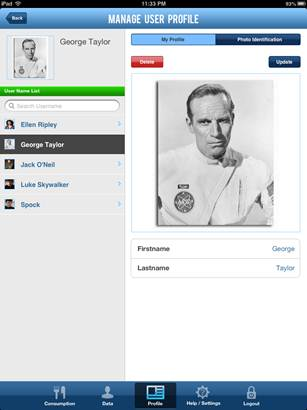
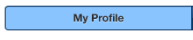
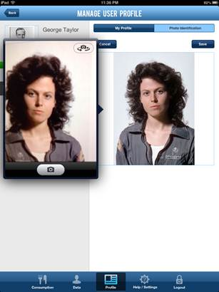

You can access the Profile page by clicking on the "Profile" button on the bottom menu of any page in the ISS FIT application:
The Manage User Profile page will be displayed:

Make sure your name is selected under the "User Name List" on the left menu. On the right side of the screen make sure to select the "My Profile" tab:

To modify your profile, click on the "Update" button:

After you're done making the necessary changes, click the "Save" button:

To modify your profile photo you can click on the "Photo Identification" tab:

To modify your profile photo, click on the "Update" button:

Next, touch your photo and the iPad camera screen will open up for you to take a new photo:

After you're done taking a new photo, click the "Save" button: